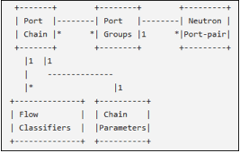
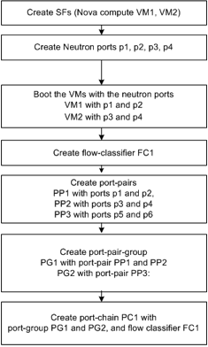
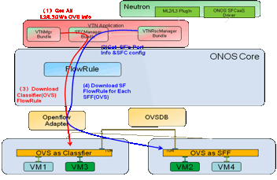

Table of Contents
ONOS SFC API.................................................................................................................... 1
1 Introduction..................................................................................................................... 6
1.1 SFC Introduction........................................................................................................ 6
1.2 Understanding SFC in Openstack Neutron and ONOS........................................................ 6
1.2.1 Service function chain creation in OpenStack Neutron follows below steps....................... 7
1.2.2 Service function chain creation in ONOS follows below steps........................................ 7
2 ONOS SFC API Documentation........................................................................................ 8
2.1 createPortPair.............................................................................................................. 8
2.1.1 Description............................................................................................................ 8
2.1.2 prototype.............................................................................................................. 8
2.1.3 Input.................................................................................................................... 9
2.1.4 Return.................................................................................................................. 9
2.1.5 Who use this.......................................................................................................... 9
2.2 createPortPairGroup..................................................................................................... 9
2.2.1 Description............................................................................................................ 9
2.2.2 prototype.............................................................................................................. 9
2.2.3 Input.................................................................................................................... 9
2.2.4 Return.................................................................................................................. 9
2.2.5 Who use this.......................................................................................................... 9
2.3 createFlowClassifierRule............................................................................................... 9
2.3.1 Description.......................................................................................................... 10
2.3.2 prototype............................................................................................................. 10
2.3.3 Input.................................................................................................................. 10
2.3.4 Return................................................................................................................ 10
2.3.5 Who use this........................................................................................................ 10
2.4 createPortChain......................................................................................................... 10
2.4.1 Description.......................................................................................................... 10
2.4.2 prototype............................................................................................................. 10
2.4.3 Input.................................................................................................................. 11
2.4.4 Return................................................................................................................ 11
2.4.5 Who use this........................................................................................................ 11
2.5 getPortPair............................................................................................................... 11
2.5.1 Description.......................................................................................................... 11
2.5.2 prototype............................................................................................................. 11
2.5.3 Input.................................................................................................................. 11
2.5.4 Return................................................................................................................ 11
2.5.5 Who use this........................................................................................................ 11
2.6 getPortPairGroup....................................................................................................... 11
2.6.1 Description.......................................................................................................... 11
2.6.2 prototype............................................................................................................. 12
2.6.3 Input.................................................................................................................. 12
2.6.4 Return................................................................................................................ 12
2.6.5 Who use this........................................................................................................ 12
2.7 getFlowClassifiers..................................................................................................... 12
2.7.1 Description.......................................................................................................... 12
2.7.2 prototype............................................................................................................. 12
2.7.3 Input.................................................................................................................. 12
2.7.4 Return................................................................................................................ 12
2.7.5 Who use this........................................................................................................ 12
2.8 getFlowClassifierRule................................................................................................ 12
2.8.1 Description.......................................................................................................... 13
2.8.2 prototype............................................................................................................. 13
2.8.3 Input.................................................................................................................. 13
2.8.4 Return................................................................................................................ 13
2.8.5 Who use this........................................................................................................ 13
2.9 getPortChains........................................................................................................... 13
2.9.1 Description.......................................................................................................... 13
2.9.2 prototype............................................................................................................. 13
2.9.3 Input.................................................................................................................. 13
2.9.4 Return................................................................................................................ 13
2.9.5 Who use this........................................................................................................ 13
2.10 getPortPair.......................................................................................................... 14
2.10.1 Description..................................................................................................... 14
2.10.2 prototype....................................................................................................... 14
2.10.3 Input............................................................................................................. 14
2.10.4 Return.......................................................................................................... 14
2.10.5 Who use this................................................................................................... 14
2.11 getPortPairGroup................................................................................................. 14
2.11.1 Description..................................................................................................... 14
2.11.2 prototype....................................................................................................... 14
2.11.3 Input............................................................................................................. 14
2.11.4 Return.......................................................................................................... 15
2.11.5 Who use this................................................................................................... 15
2.12 getFlowClassifier................................................................................................. 15
2.12.1 Description..................................................................................................... 15
2.12.2 prototype....................................................................................................... 15
2.12.3 Input............................................................................................................. 15
2.12.4 Return.......................................................................................................... 15
2.12.5 Who use this................................................................................................... 15
2.13 getPortChain....................................................................................................... 15
2.13.1 Description..................................................................................................... 15
2.13.2 prototype....................................................................................................... 15
2.13.3 Input............................................................................................................. 16
2.13.4 Return.......................................................................................................... 16
2.13.5 Who use this................................................................................................... 16
2.14 isServiceFunction................................................................................................. 16
2.14.1 Description..................................................................................................... 16
2.14.2 prototype....................................................................................................... 16
2.14.3 Input............................................................................................................. 16
2.14.4 Return.......................................................................................................... 16
2.14.5 Who use this................................................................................................... 16
Service function chain: When a data stream passes through an ingress or egress point in a physical or virtual network device, using service chain it is possible to program exactly which sequence of actions the data stream is subjected to. This ordered action by set of service functions on the data stream is called a service function chain.
Openstack Neutron allows for creating of service chains on the virtual devices. All Neutron network services and VMs are connected to a Neutron network via Neutron port
When the service function (SF) is attached to Neutron ports, the ports becomes "port chain" to allow the service function to treat the user's traffic. A Port Chain (Service Function Path) consists of a set of Neutron port-pairs, to define the sequence of service functions, a set of flow classifiers, to specify the classified traffic flow to enter the chain; a neutron port-pair may be associated to more than one Port Chain to allow a service function to be part of multiple chains.
Flow classifiers are used to select the traffic to access the chain. Traffic that matches any flow classifier will be directed to the first port in the chain. The flow classifiers define the source and destination endpoints of the traffic that can enter a port chain.


STEP 1: Create Service Manager Instance as a separate Service
STEP 2: Create listeners to ML2 plug-in (Consumer for ML2 events)
STEP 3: Define classes to process NBI calls from Neutron
STEP 4: When Neutron call ML2 plug-in for Create Port, Learn the ports.
STEP 5: When Neutron call bind port, Learn SF instances and SFF-SF mapping.
STEP 6: When Neutron call port-pair create, process it as already know the ports from STEP 4
STEP 7: When Neutron call port-pair-group, process it as already knows the port-pairs from STEP 6
STEP 8: When Neutron call create flow classifier, create it and wait for download.
STEP 9: When Neutron call create port-chain,
1.Get the port-pair-group information and flow classifier information.
2.From the port-pair-group, identify the SFF-SF mapping.
3.Note VTN Manager has already created the tunnel (VxLAN) between SFs using ML2 plug-in
4.Download the flow classifier at the classifier.
5.Now create the NSH header information with SFP Id, SI Id.
6.Add any optional context information or metadata if given by Neutron
7.Use forwarding objective Interface (flowrule) to download the forwarding data into the OVS (2.3.0 with patch)

Neutron can use this API to create a port pair resource in ONOS. A port pair consists of Ingress port and egress port of a VM.
@POST
@Consumes(MediaType.APPLICATION_JSON)
@Produces(MediaType.APPLICATION_JSON)
public Response createPortPair(InputStream stream)
stream£ºInputStream of Json (REST API body)
200 - on success.
404 - on error
OpenStack Neutron uses this API to create a port pair resource
Neutron can use this API to create a port pair group resource in ONOS. A port pair group consists of many port pairs which are used for load balancing
@POST
@Consumes(MediaType.APPLICATION_JSON)
@Produces(MediaType.APPLICATION_JSON)
public Response createPortPairGroup(InputStream stream)
stream£ºInputStream of Json (REST API body)
200 - on success.
404 - on error
OpenStack Neutron uses this API to create a port pair group resource for load balancing between many port pairs
Neutron can use this API to create a flow classifier rule in ONOS. A flow classifier rule consists of five tuple classifier attributes.
@POST
@Consumes(MediaType.APPLICATION_JSON)
@Produces(MediaType.APPLICATION_JSON)
public Response createFlowClassifierRule(InputStream stream)
stream£ºInputStream of Json (REST API body)
200 - on success.
404 - on error
OpenStack Neutron uses this API to create a flow classifier rule to be applied in the data plane for selecting and forwarding the data packets to an appropriate port chain.
Neutron can use this API to create a service chain resource in ONOS and ONOS will prepare the forwarding behavior and download to all the OVS along the service chain path. A port chain specifies which port group and flow classifier to use for this chain.
@POST
@Consumes(MediaType.APPLICATION_JSON)
@Produces(MediaType.APPLICATION_JSON)
public Response createPortChain(InputStream stream)
stream£ºInputStream of Json (REST API body)
200 - on success.
404 - on error
OpenStack Neutron uses this API to create a port chain in the ONOS. ONOS creates the port chain on the OVS.
Neutron can use this API to get all port pairs created in ONOS
@GET
@Produces(MediaType.APPLICATION_JSON)
public Response getPortPairs();
None
This API returns the list of port pairs in Json format.
OpenStack Neutron to get all port pair resource
Neutron can use this API to get all port pair groups created in ONOS
@GET
@Produces(MediaType.APPLICATION_JSON)
public Response getPortPairGroups();
None
This API returns the list of port pair groups in Json format.
OpenStack Neutron to get all port pair groups
Neutron can use this API to get all OVS list that perform classifier.
@GET
@Produces(MediaType.APPLICATION_JSON)
public Response getFlowClassifiers();
None
This API returns the all OVS that perform classifier in Json format.
OpenStack Neutron use this API
Neutron can use this API to get the flow classifier rule.
@GET
@Produces(MediaType.APPLICATION_JSON)
public Response getFlowClassifierRule();
None
This API returns the flow classifier rule in Json format.
OpenStack Neutron use this API
Neutron can use this API to get all port chains that are created in ONOS.
@GET
@Produces(MediaType.APPLICATION_JSON)
public Response getPortChains();
None
This API returns the list of port chains in Json format.
OpenStack Neutron to get the list of all port chains
Neutron can use this API to get details of a given port pair created in ONOS
@GET
@Path("{pair_id}")
@Produces(MediaType.APPLICATION_JSON)
public Response getPortPair(@PathParam("pair_id") String id);
Id: Port pair id
Port pair details of the given identifier.
404 if the port pair with given identifier does not exist.
OpenStack Neutron use this API to get a given port pair resource details
Neutron can use this API to get details of a given port pair group created in ONOS
@GET
@Path("{group_id}")
@Produces(MediaType.APPLICATION_JSON)
public Response getPortPairGroup(@PathParam("group_id") String id);
Id: Port pair group id
Port pair group details of the given identifier.
404 if the port pair group with given identifier does not exist.
OpenStack Neutron use this API to get a given port pair group resource details
Neutron can use this API to get details of a given flow classifier created in ONOS
@GET
@Path("{flow_id}")
@Produces(MediaType.APPLICATION_JSON)
public Response getPortPairGroup(@PathParam("flow_id¡±) String id);
Id: flow classifier id
Flow classifier details of the given identifier.
404 if the flow classifier with given identifier does not exist.
OpenStack Neutron use this API to get a given flow classifier resource details
Neutron can use this API to get details of a given flow classifier created in ONOS
@GET
@Path("{chain_id}")
@Produces(MediaType.APPLICATION_JSON)
public Response getPortPairGroup(@PathParam("chain_id¡±) String id);
Id: port chain id
Port chain details of the given identifier.
404 if the port chain with given identifier does not exist.
OpenStack Neutron use this API to get a given port chain details
This API checks if a VM is SF or not.
boolean isServiceFunction(VirtualPortId portId);
portId: VM represented by portId
True if VM is SF else False
VTN Manager uses this API to check if a given VM is SF or not